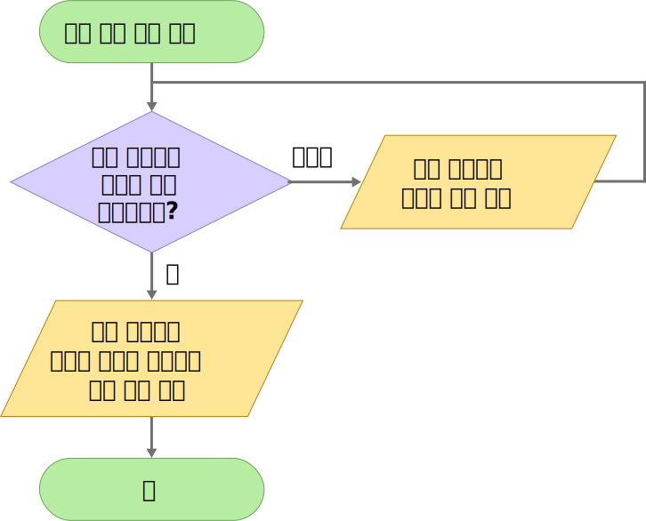
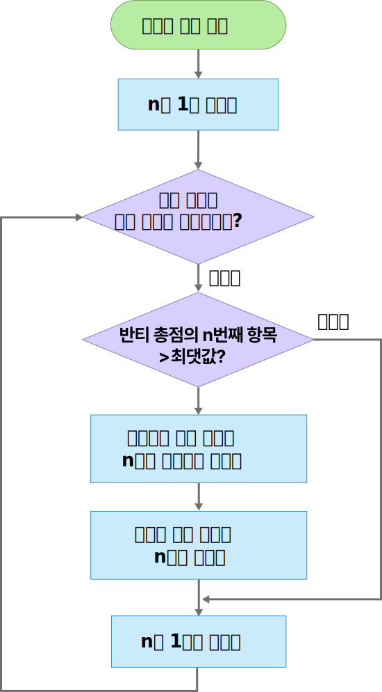
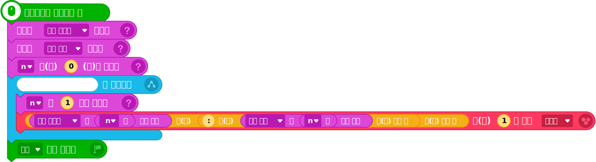
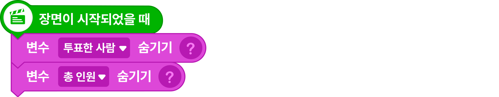
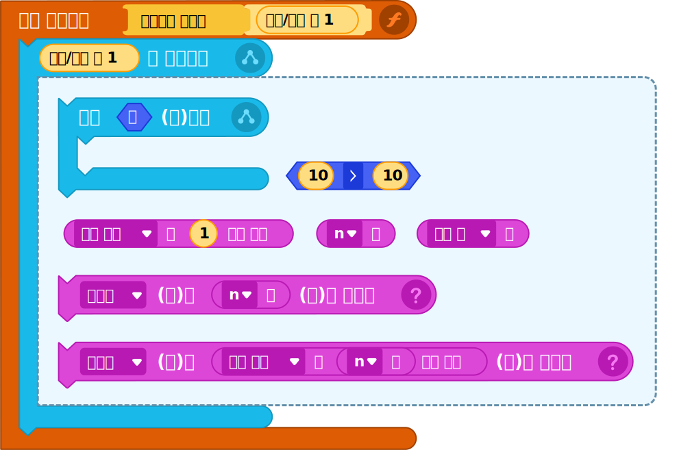
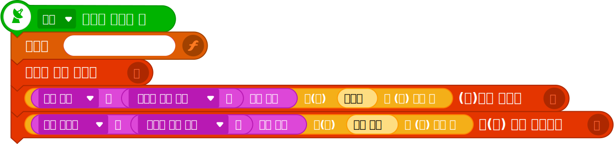

2알고리즘 설계
①문제 해결을 위해 오브젝트로 구현해야 할 기능을 알아본다.
|
반티별 점수 보기
![[묶음] 반티 오브젝트](img/object_bant.png)
|
‘반티’ 오브젝트를 클릭하면 리스트에 저장된 각 반티별 투표 점수를 말하고, '결과' 신호를 보낸다. |
|---|---|
|
반티 선정 결과 보기
|
‘결과’ 신호를 받으면, 가장 높은 점수를 얻은 반티의 이름과 점수를 글상자에 표시한다. |
순서도

②프로그램에 필요한 변수를 생각해 보자.
반티 총점 리스트에 저장된 항목 중 최댓값을 찾는 알고리즘을 생각해 보자. 최댓값은 다음과 같은 순서로 결정된다.
순서도

3프로그래밍
①준비하기
| 오브젝트 |
|
|---|---|
| 리스트 |
|
| 변수 |
Tip
추가하는 변수를 실행 화면에서 보이지 않게 숨긴다.
|
| 신호 |
|
②프로그램 작성하기
| 오브젝트 | 명령 블록 |
|---|---|
|


|
|  | |
|  |